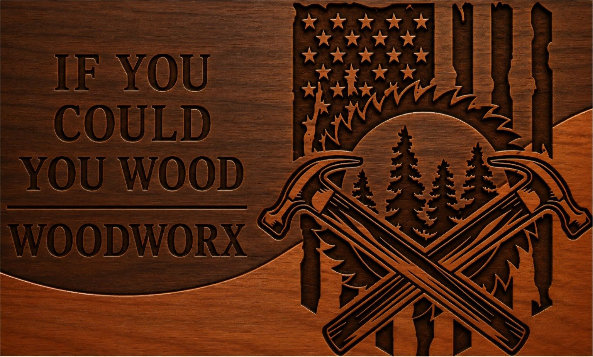
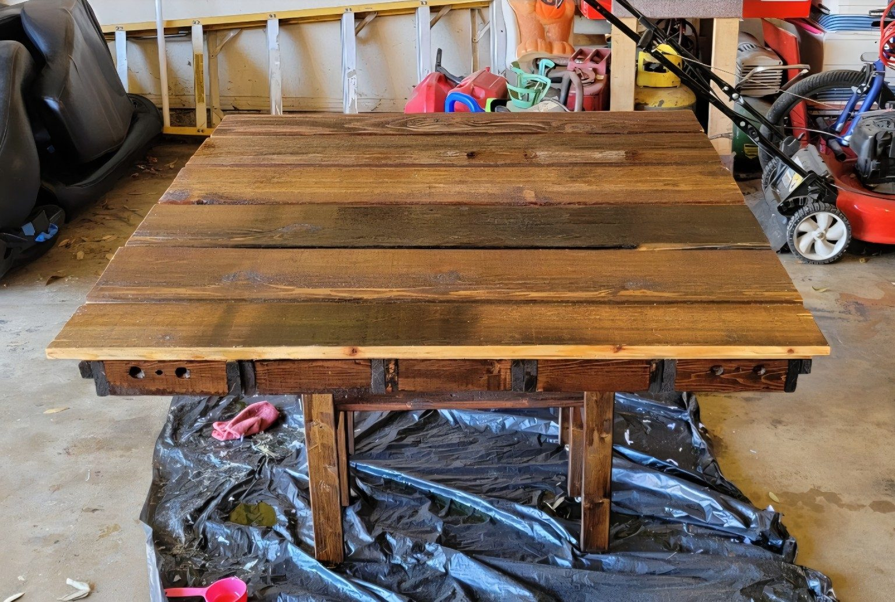
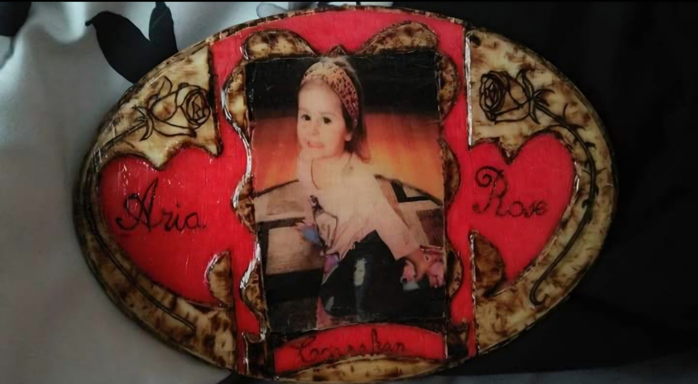
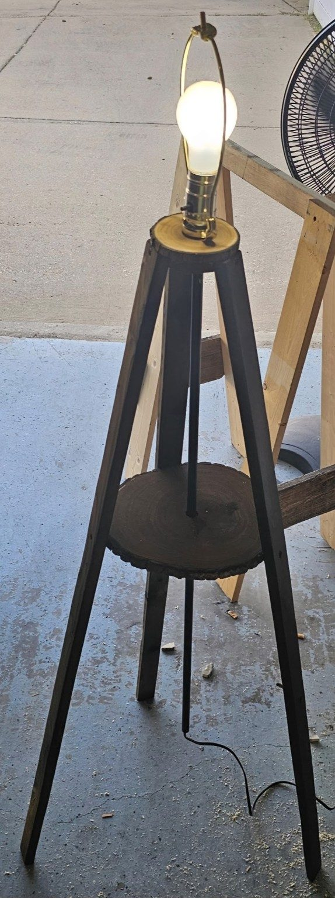
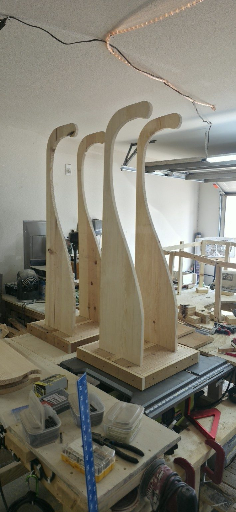
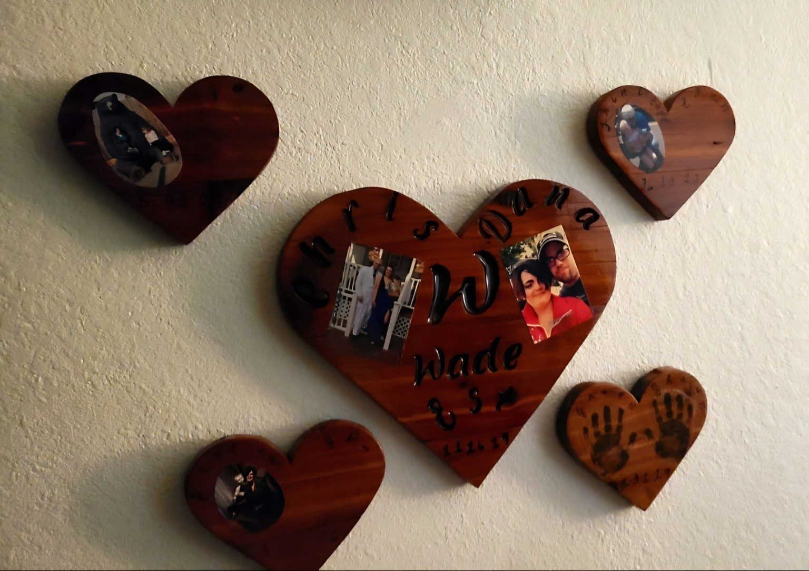
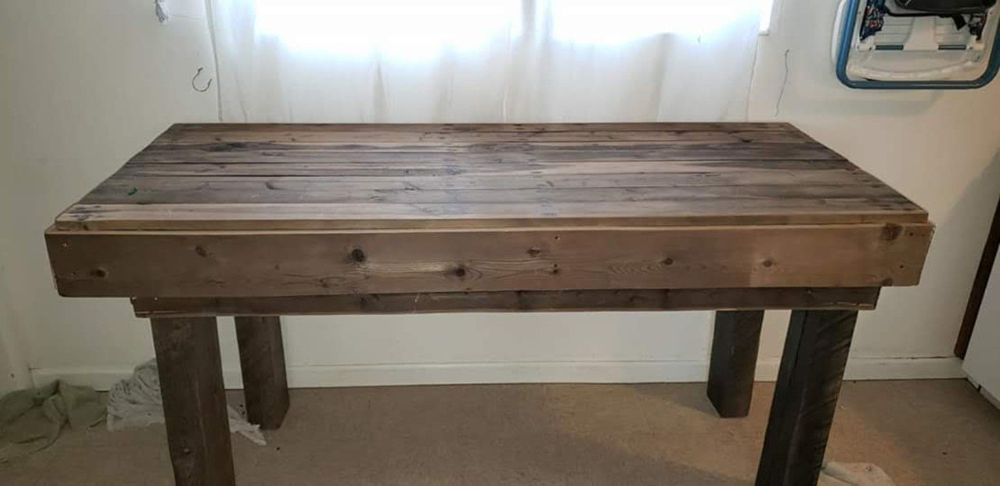

Furniture
Tables, desks, shelving, benches and custom furniture built to your dimensions.
Build furniture →
IF YOU COULD YOU WOOD WOODWORXHANDCRAFTED • CUSTOM • BUILT TO LAST
Custom furniture, rustic décor, personalized keepsakes and one-of-a-kind pieces built by hand — made for people who want something better than ordinary.
THE PORTFOLIO
From practical furniture to highly personalized pieces, every project is built around the idea, space and personality of the customer.







WHAT WE BUILD
We don't force your idea into a catalog. We build around what you actually need — and make it look damn good doing it.
Tables, desks, shelving, benches and custom furniture built to your dimensions.
Build furniture →Photo pieces, memorials, signs, keepsakes, names, dates and meaningful gifts.
Make it personal →Bold statement pieces, natural grain, rich stains, charred finishes and handcrafted details.
Add character →Tripod lamps and unique wood-and-light combinations designed around your style.
Light it up →HOW IT WORKS
Bring us a sketch, a photo, a rough measurement or just an idea. We'll help turn it into something real.
Share what you want, your dimensions, style and budget.
We work through materials, details, finish and a clear project price.
Your piece is cut, shaped, assembled and hand-finished.
Pick it up or arrange delivery and enjoy something nobody else has.
THE WOODWORX DIFFERENCE
Custom woodworking is about more than cutting boards and driving screws. It's about taking a rough idea and turning it into something that feels like it belongs in your home.
Our work leans toward bold rustic character, visible grain, hand-shaped details and finishes that let the wood tell the story.
LET'S BUILD SOMETHING
Send the dimensions, a photo or sketch, the type of wood you want, and any personalization. We'll turn it into a project plan and quote.